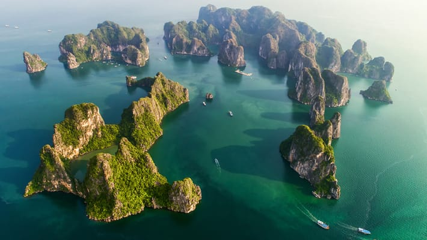
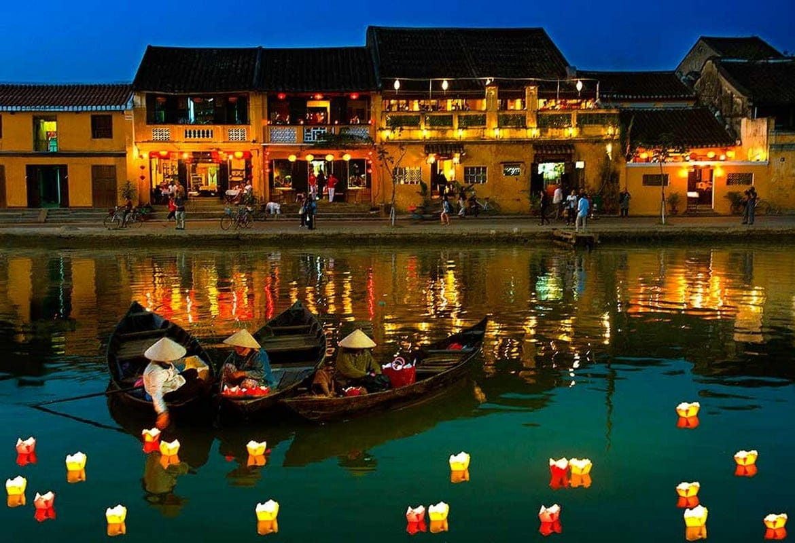
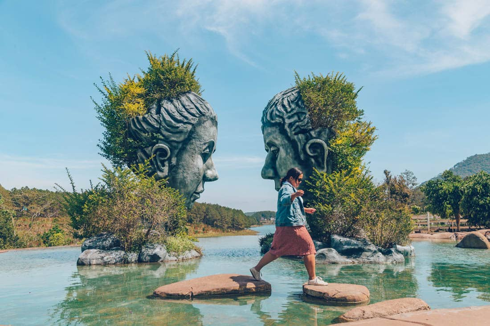
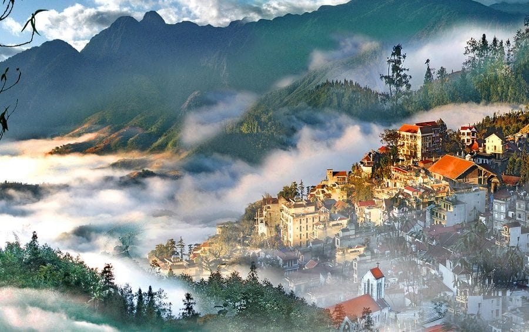
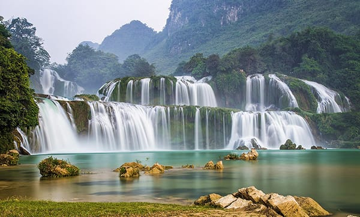

Hanoi – The Heart of Vietnam's Culture
Hanoi, the capital of Vietnam, is a fascinating city where history and modernity coexist. The city is famous for its colonial-era architecture, ancient temples, and bustling streets.
-
Ha Long Bay – A UNESCO World Heritage Gem
Often hailed as one of the most beautiful places on earth, Ha Long Bay is a must-visit destination for any traveler. Known for its emerald waters and striking limestone islands, Ha Long Bay is a UNESCO World Heritage Site and one of the 10 best places to visit in Vietnam.

-
Hội An – The Ancient Town of Lanterns
Step back in time with a visit to Hội An, a UNESCO World Heritage Site that is celebrated for its well-preserved architecture and colorful lantern-lit streets. This charming town is a blend of Chinese, Japanese, and European influences, creating a unique and magical atmosphere.

-
Da Lat – Vietnam’s Charming Highland Escape
Known as the "City of Eternal Spring," Da Lat is located in Vietnam’s Central Highlands and offers a cooler climate year-round. This romantic town is surrounded by rolling hills, pine forests, and tranquil lakes, making it an ideal destination for relaxation and adventure.

-
Sapa – Vietnam’s High-Mountain Wonderland
Sapa is famous for its terraced rice fields and stunning mountain views, making it one of the 10 best places to visit in Vietnam. Located near the Fansipan mountain, the highest peak in Indochina, Sapa offers a cool climate and spectacular landscapes.

-
Cao Bằng – Hidden Beauty in Northern Vietnam
For those looking to venture off the beaten path, Cao Bằng is a hidden gem in northern Vietnam. The province is home to some of the country’s most stunning natural scenery, including the Ban Gioc Waterfall, one of the largest waterfalls in Vietnam, which is shared with China.

-
Hà Giang – The Majestic Mountains of Vietnam
If you’re seeking dramatic landscapes, Hà Giang in the far north of Vietnam is a must-see. This region is famous for its towering mountains, deep valleys, and unique geological formations. The Dong Van Karst Plateau is a UNESCO Global Geopark and is known for its breathtaking beauty.